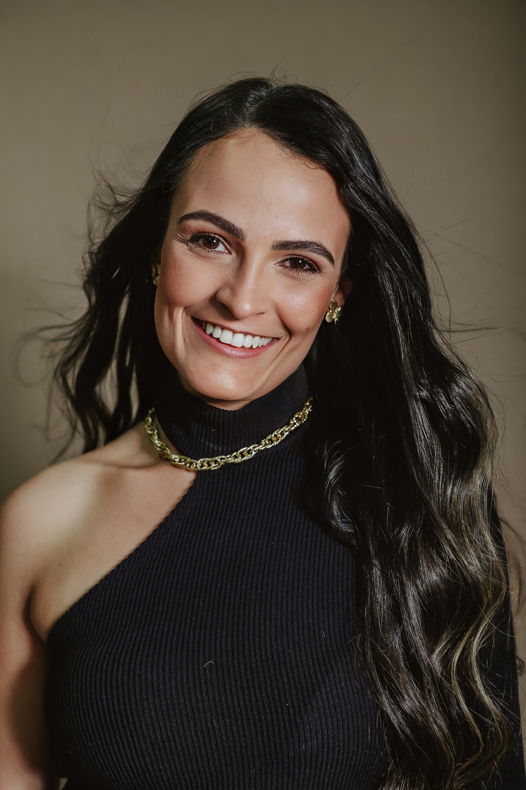
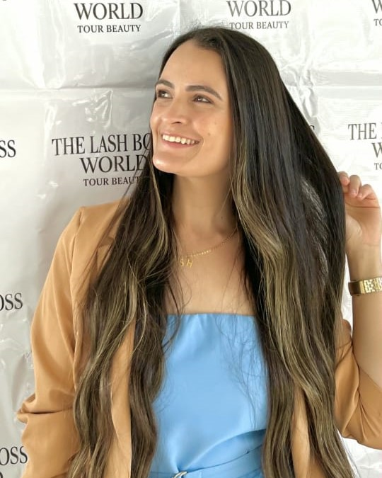
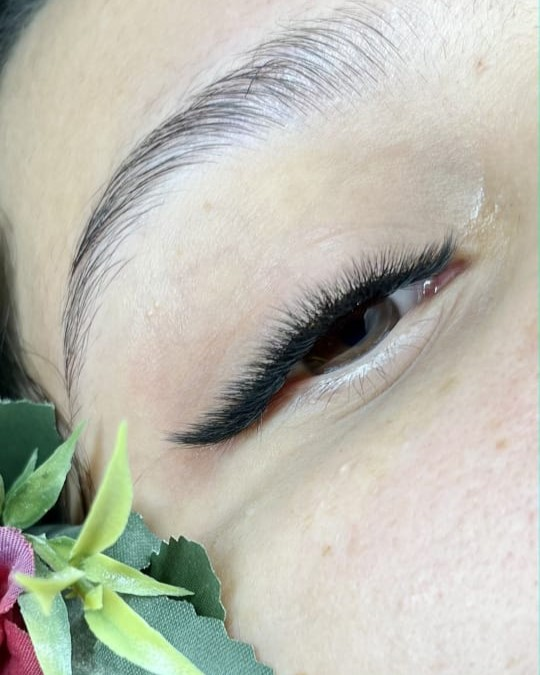
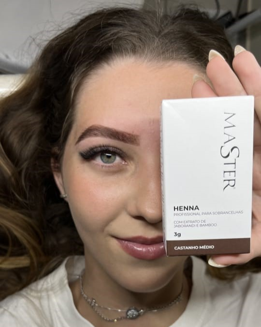
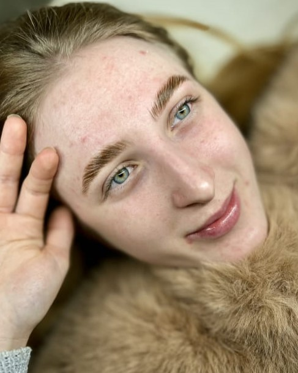
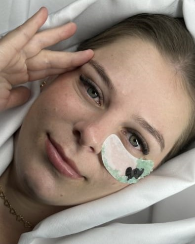
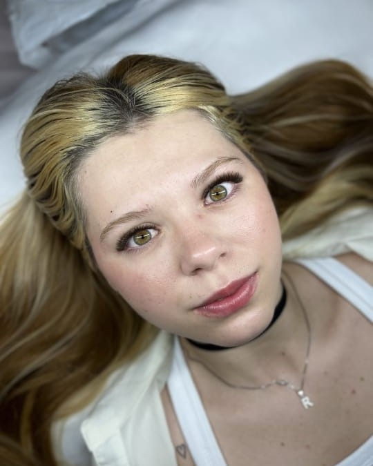
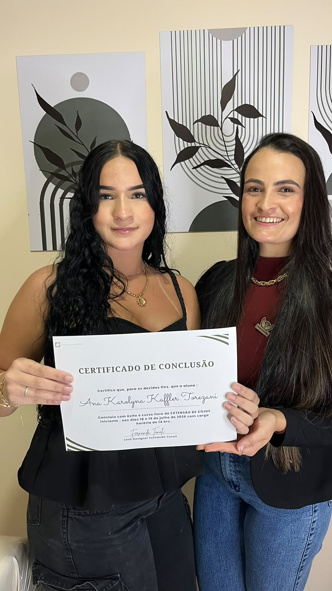
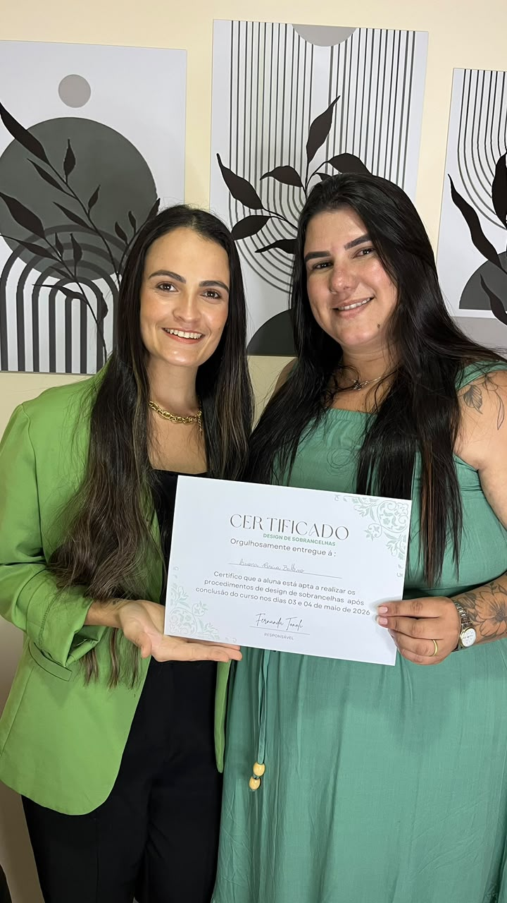

Especialista em cílios e sobrancelhas • Mentora e educadora
Beleza, técnica e propósito para transformar olhares e carreiras.
Atendimentos personalizados, cursos e mentorias para mulheres que valorizam qualidade, cuidado e evolução profissional.
Atendimento presencial e online

Desde 2020
Cuidando de olhares,fortalecendo mulheres.
Sobre Fernanda
Muito além da beleza: um trabalho feito com propósito.

Sou Fernanda Tonoli, especialista em cílios e sobrancelhas, mentora, educadora e palestrante.
Minha trajetória na área da beleza começou em 2020, durante a pandemia. O trabalho com cílios e sobrancelhas surgiu como uma segunda fonte de renda e como uma forma de enfrentar a insegurança profissional daquele período.
Em 2021, deixei a CLT para me dedicar completamente à profissão. Desde então, venho construindo meu espaço com estudo, atualização e compromisso com a qualidade.
Com minhas clientes, quero proporcionar autoestima, cuidado e amor-próprio. Com minhas alunas, compartilho conhecimento para ajudar a transformar carreiras, assim como essa profissão transformou a minha vida.
-
2020
Início na área de cílios e sobrancelhas durante a pandemia.
-
2021
Dedicação integral à profissão e à construção de uma carreira própria.
-
Hoje
Referência local, educadora, palestrante e profissional premiada.
Autoridade e conquistas
Experiência construída com dedicação e resultados.
Cada conquista representa anos de estudo, prática, atualização e compromisso com uma entrega de qualidade.
01Embaixadora Unilashes
02Master Silver da Master
03Embaixadora do CRMLIS
04Educadora e palestrante
Procedimentos
Serviços pensados para valorizar sua beleza.
Cada atendimento respeita suas características, preferências e o resultado que você deseja alcançar.
01
Olhar personalizado
Extensão de cílios
Técnicas escolhidas para proporcionar um olhar elegante, harmonioso e adequado ao seu estilo.
02
Tecnologia e atualização
Lash LED
Tecnologia aplicada à extensão de cílios para oferecer um procedimento moderno e alinhado às atualizações do mercado.
03
Harmonia natural
Design de sobrancelhas
Design personalizado, com ou sem henna, para valorizar o formato natural do rosto e trazer equilíbrio ao olhar.
04
Definição delicada
Brow Lamination
Procedimento que organiza e direciona os fios naturais para sobrancelhas mais alinhadas e definidas.
Resultados reais
Detalhes que valorizam cada olhar.
Técnica, leveza e personalização em resultados criados para respeitar a beleza de cada cliente.





Cursos
Conhecimento para quem deseja começar ou evoluir.
Formações presenciais e online, com uma abordagem clara, prática e comprometida com a qualidade do trabalho.
Extensão de cílios para iniciantes
Base técnica segura para quem deseja começar na profissão.
Especialização em extensão de cílios
Aperfeiçoamento de técnica, acabamento e qualidade da entrega.
Design de sobrancelhas para iniciantes
Fundamentos para começar a atender com mais confiança.
Especialização em design de sobrancelhas
Treinamento para aprimorar resultados e ampliar conhecimentos.


Formação com propósito
Cada certificado representa uma etapa de evolução, técnica e confiança para seguir construindo uma carreira própria.
Mentoria individual
Um acompanhamento construído em torno da sua dificuldade.
Cada profissional vive um momento diferente. Por isso, as mentorias são personalizadas de acordo com as dificuldades, os objetivos e o nível de experiência de cada aluna.
Quero conhecer a mentoriaComo pode acontecer
- Atendimento presencial ou online
- Encontros ao vivo
- Acompanhamento pelo WhatsApp
- Plano individual de evolução
O que vamos desenvolver
- Qualidade dos procedimentos
- Segurança e posicionamento profissional
- Valorização do próprio trabalho
- Preço mais justo e próximos passos
Os resultados dependem da dedicação, aplicação e realidade profissional de cada aluna.
Histórias reais
Resultados que fazem parte desta trajetória.
Os relatos de clientes e alunas serão apresentados aqui com verdade, contexto e autorização.
Marcas parceiras
Produtos e ferramentas que fazem parte do meu trabalho.
Use os cupons abaixo e consulte as condições atuais diretamente com cada marca.
Unilashes
Cupom de desconto
CRMLIS
Aplicativo de agendamentos para profissionais da beleza.
Carmenlee Beauty
Cupom de desconto
Links oficiais e condições de desconto serão adicionados após confirmação das marcas.
Contato
Seu próximo passo começa com uma conversa.
Consulte horários, conheça os procedimentos ou receba informações sobre cursos e mentorias.
Falar com Fernanda pelo WhatsAppQualidade, não quantidade.
Qualidade, cuidado e conhecimento em cada detalhe.
Seja para valorizar seu olhar ou desenvolver sua carreira, você encontrará um atendimento próximo, personalizado e comprometido com a qualidade.